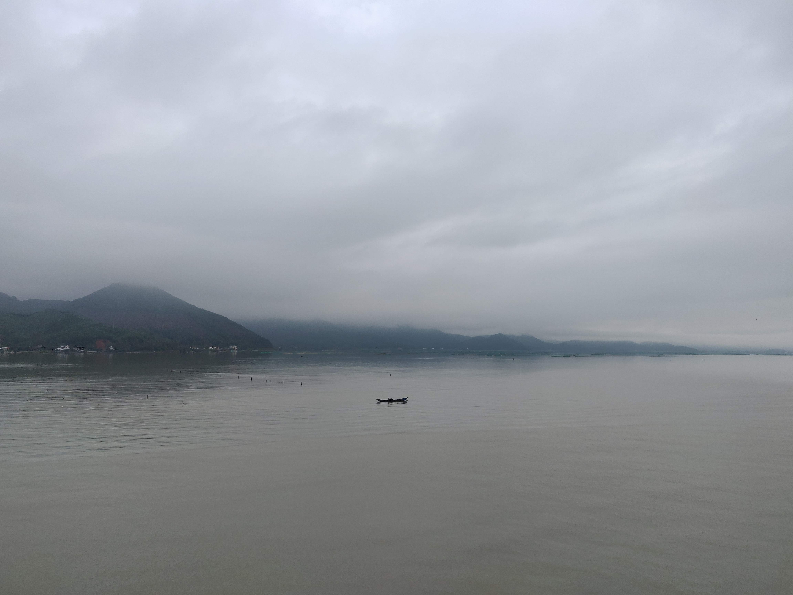
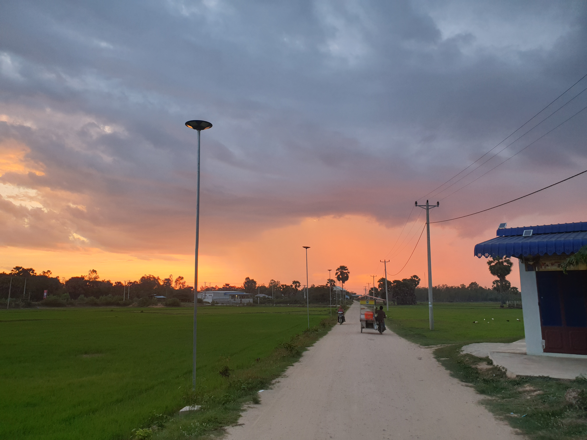
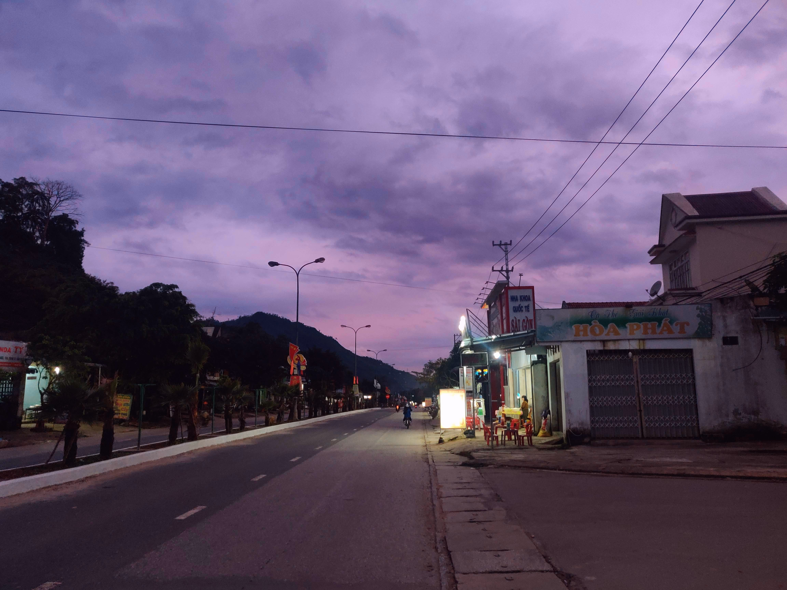

Finding happiness
A toast to these kids. I cannot stress how impressed and happy these kids made me that day. My friend and I were both doubtful of their styrofoam boat working. But not only did it work, it carried all 3 of them. They then went to get a stick to maneuver the boat. Before finally using the red shirt as a flag to top it all off. Absolute geniuses.
Some pictures from my Vietnam and Cambodia trips.

A house in the tranquil lake before Hai Van Pass.

A boat in the middle of a vast lake. Shot from a bridge in Da Nang.

The gravel road entrance to the Prey Veng Village, with a beautiful sunset to end it all off on our last night there.

The beautiful streets of Thanh My. Arguably my favourite little town of all the towns I have visited in Vietnam.
"Children are happy because they have the power of finding happiness in the simplest things."
-Debasih Mridha
I'm Taddy Mason! I will share all about my trips!
Click that button to talk now for a low low price of $1.99 a minute!